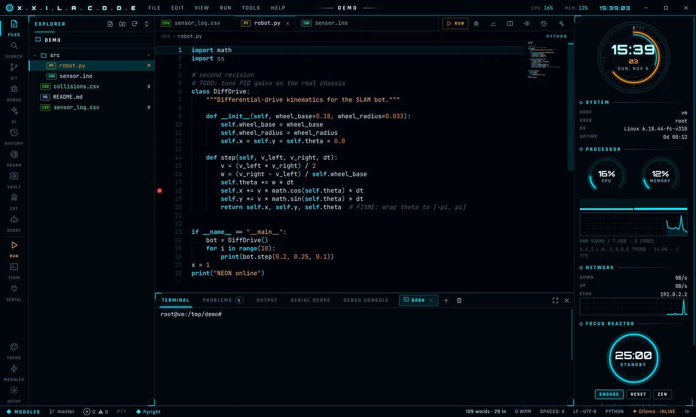
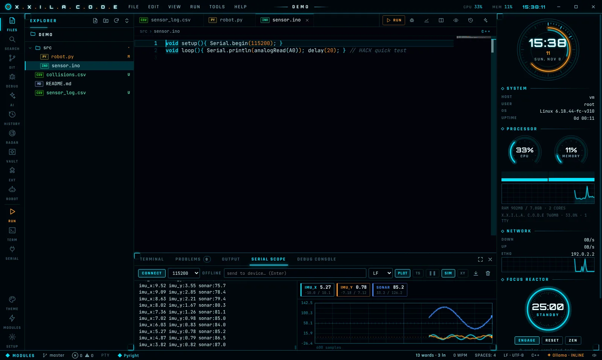
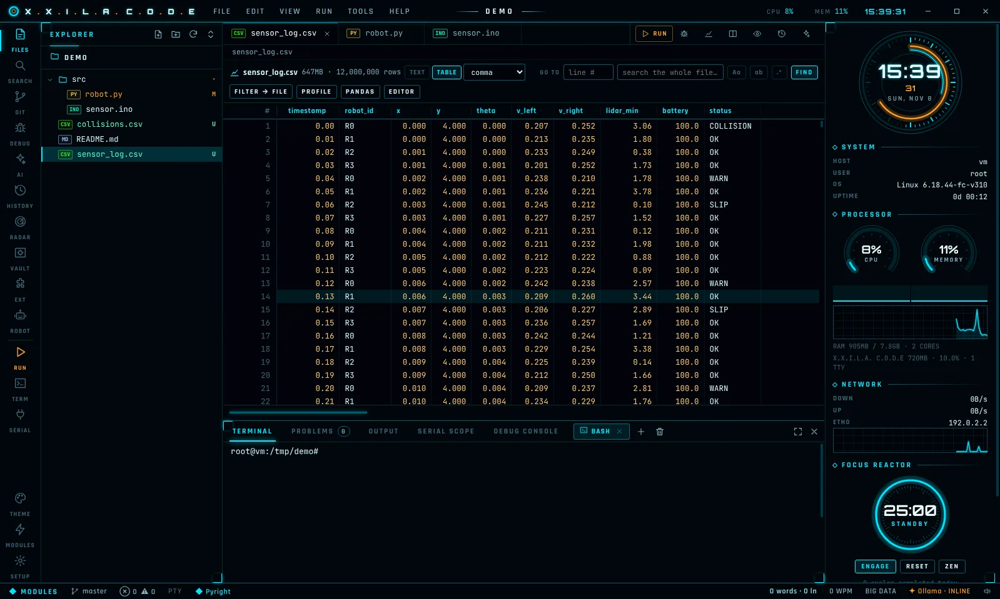

A sci-fi code editor with real IDE power. Language servers, a debugger, the AI assistant of your choice, a big-data viewer and robotics tools, wrapped in a neon grid.
DOWNLOADmacOS 12 or newer. Pick your chip: Apple menu → About This Mac.
64-bit. AppImage runs on most distros; .deb for Ubuntu, Debian, Mint, Pop!_OS.
All files and checksums: release page. On phones and tablets? This is a desktop app; open this page on a computer.
Monaco, the engine inside VS Code: multi-cursor, minimap, sticky scroll, split view, 15+ themes.
Language servers for Python, C/C++, Rust, Go and more: completion, go-to-definition, rename, diagnostics.
Python breakpoints, stepping, variables, watch expressions and call stack.
Claude, GPT, Gemini, Mistral, Groq, DeepSeek, OpenRouter, or fully local with Ollama and LM Studio. Inline completions included.
Open multi-gigabyte CSV and log files instantly. Table view, search, filter to file, column profiling.
Arduino CLI, PlatformIO, MicroPython, ROS 2 tools and a live serial oscilloscope with XY mode.
Every save is snapshotted. Scrub back through history and restore any version.
Install themes and snippets from the Open VSX marketplace, or write sandboxed plugins.
Live system HUD, synthesized interface sounds and a boot sequence. Every effect can be switched off.



xattr -cr "/Applications/X.X.I.L.A. C.O.D.E.app"
chmod +x XXILA-CODE-x86_64.AppImage ./XXILA-CODE-x86_64.AppImageIf it complains about FUSE on Ubuntu 22.04 or newer:
sudo apt install libfuse2 (24.04: libfuse2t64).sudo apt install ./xxila-code_amd64.deb, then launch it from your app menu.